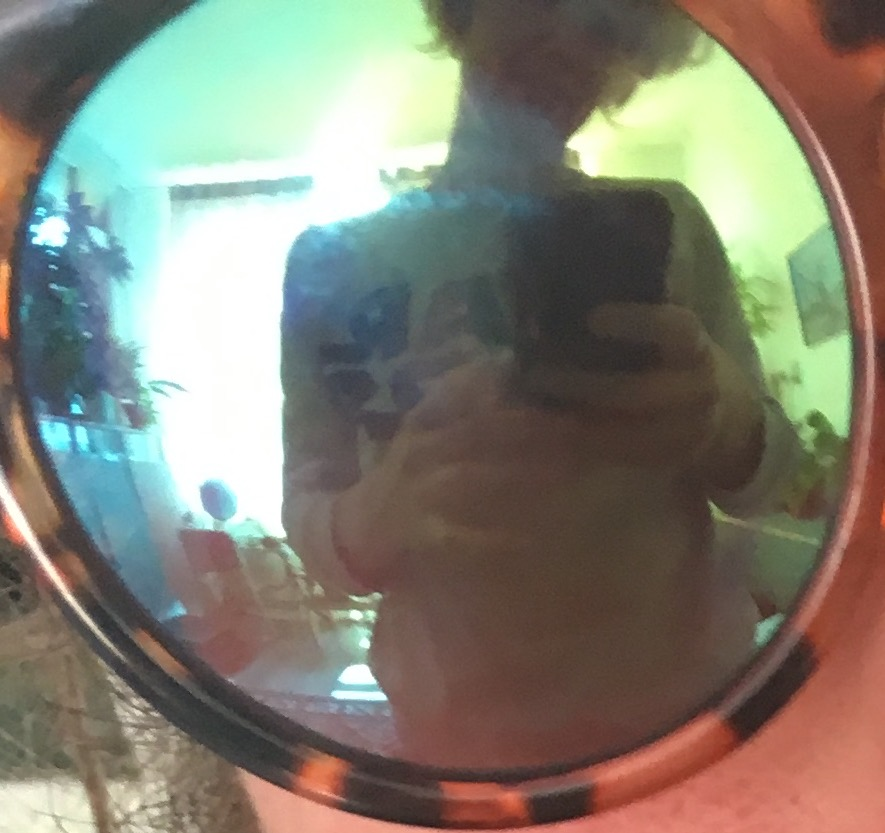

Since 2002 I have worked closely with some of Amsterdam’s most recognised cultural organisations such as VPRO and Virtual Platform in HR, administrative, and production roles. As a creative person with excellent organisational skills I work effectively with cultural employees, teams and organisations - and thrive in places where people are passionate about new ideas. In my spare time I am an avid photographer and visual artist, and have sung professionally with acclaimed Dutch music acts such as Roald van Oosten in Ghost Trucker, Awkward i, Alamo Race Track, Seesaw and Zoppo with Cees van Appeldoorn now in HOWRAH.
I also love to:
- dance
- knit
- watch old Buffy the Vampire Slayer episodes
